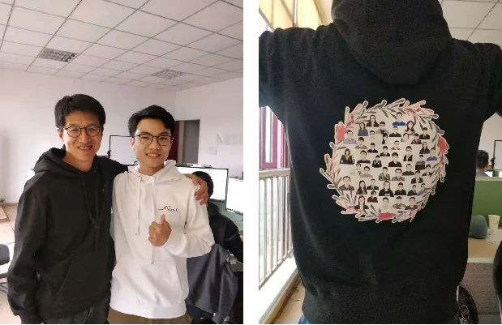
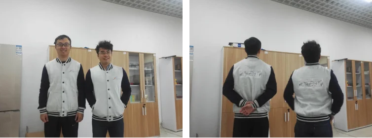
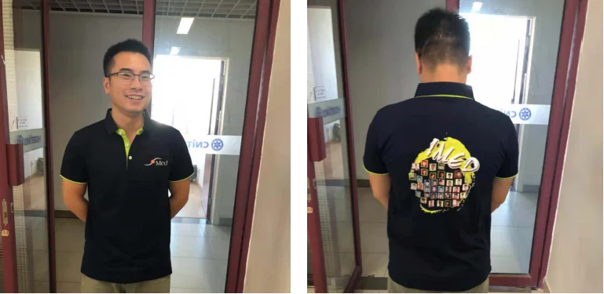
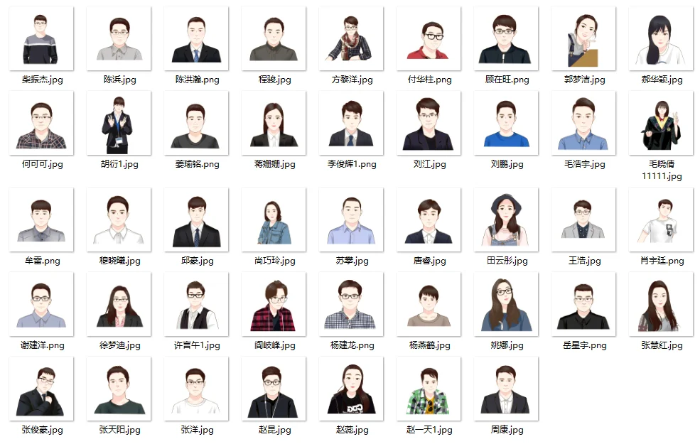

从iMED中国到iMED队服
从2016年3月14日iMED中国成立到今天的966天时间里，我们iMED中国团队一直前行的科研道路上。我们齐心协力，努力拼搏，不畏艰难，勇往直前，在对科研的兴趣与热情的引领下，以及在坚持不懈所付出的汗水的支撑下，我们取得了很多令人满意的成就。
但是今天我们就不讲科研！不说成就！因为今天，我们超级棒的iMED中国队服第三版发布啦！
超棒的第三版队服
看！这就是我们的第三代队服。有没有很赞~

相比之前的队服，我们本次不仅提升了衣服的质量，还提供了更多的颜色选择（黑、白、米色），并且在视觉细节上也比以往下了更大的功夫。穿上这版队服，能够帮助我们在这立冬之季抵御寒风，尽情的挥洒颜值~
从第一版到第三版
回过头看，我们的第一代队服出生于去年的这个时候（2017年11月4日），由赵一天老师负责订做，黑色袖子加米白色的主色调非常的百搭，胸前有我们iMED中国的logo，背后则是放上了我们的大合照。这版队服给我们今后的队服订做树立了一个好基准，好榜样，刘江老师穿上以后都评价道：“超级舒服，一天，有品位”。

而第二版队服在2018年7月8日做好，由团队内的工程师杨燕鹤负责订做，由于团队内人员逐渐变多，合照时间不好安排，队服开始用头像拼接（而不是大合照）的方式构建衣服背后的图像，同时在衣服的样式上，主色调选择了更显气质的深色，配合曾今新加坡队服的黄绿色，也非常的好看。

最后就是上面的第三版队服，不仅衣服款式和材质相比之前变化很大，而且首次提供了不同颜色可选择，使得穿上的人的颜值如虎添翼。身后图片的设计上更是别有用心，不是大合照，也不是简单的图片拼接，而是为团队内的成员的头像都各自画上了漫画，再将这些漫画组合成了一个更具艺术性的花环。这款队服由我们组的第一个加入的博士-阎岐峰负责订做，我们感谢他的用心与付出。

从第三版到第N版
我们知道，人是构成团队的最核心的力量，优秀的团队文化自然就能极大限度的调动起团队中的人的积极性，所以说任何一个足够优秀的团队都不会忽视对自己的团队文化的建设和培养。这一点对于我们iMED中国团队自然也是一样。队服作为一个能够穿着于身的贴身物品，比其他任何东西都能够融入到成员的日常生活中去，这也是iMED中国品牌精神的一种物化形式。
“物是人非”这个词经常被人用于表示对人员变动所产生的伤感情绪上面，但是其实反过来想，我们也可以发现其积极含义，那就是即便未来在iMED中国团队的人和现在不太一样，但iMED中国还是那个iMED中国，队服也一直在延续和升级。自己曾经在团队中所付出的努力，现在也在被团队中的其他人以其他的形式所传承着，这不也是一件令人无比欣慰的事情吗。每个成员能在团队中待多久，甚至iMED中国团队能存在多久，谁都不能在现在就给出肯定的答案。但是，队服作为一种小小的努力，是团队存在阶段的一种物证，亦是团队存在时间上的里程碑的具现。所以为了让我们一同鉴定历史，我们一定争取队服的定期更新，争取让每个在IMED留下足迹的人都有一件有自己相片的队服。
作者：杨燕鹤